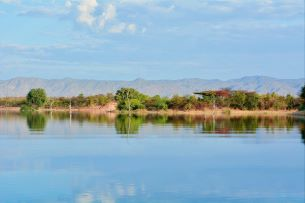

Kariba Redd+ Project
There are three main ways that the Kariba Redd+ project reduces deforestation. First, it limits deforestation due to farming practices. People living there were provided equipment and education to improve crop yields. This is because people often cut down large swathes of forest to make more fields. People were also taught new trades and skills to have an income less reliant on farming. Secondly, it limits deforestation due to fire. Anti-poaching groups have been made in order to limit poachers. Poachers will often burn brush for their dogs to catch prey. The project has also focused on fire breaks and early burn systems to mitigate a wildfire's impact. The project also has measures to prevent and extinguish wildfires. Finally the Kariba Redd+ project reduces deforestation caused by logging. Natives have been provided with better stoves and taught about alternative fuel sources for burning.
Meatless Mondays
At Umass Lowell there is a course covering climate change. In it professor Juliette Rooney-Varga challenged students to come up with a plan to reduce the university's footprint by 10,000 pounds over the span of ten weeks. One group figured out how to lose 51,141 pounds in a month. This group was comprised of Lena Dziechowski, Megha Sudheendra and Brittany Segil. In their plan they proposed passing on meat for one monday each month. This plan also took first at the Rist Institute for Sustainability and Energy.